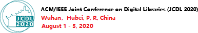

at the ACM/IEEE Joint Conference on Digital Libraries 2020 (JCDL2020), Wuhan, China

News: Since EEKE is hosted by JCDL, at least one author per paper must register, see instructions here
<https://2020.jcdl.org/Registration.html>. Deadline for Regular Registration is July 30.
News: EEKE2020 will be an all-virtual workshop as JCDL will be online only. Deadline for submission: June 22, 2020 (extended)
Keynote by Min Song (Yonsei University, South Korea): Entitymetrics 2.0: Measuring the Impact of Entities and Relations Extracted from Scientific Documents.
Keynote by Markus Stocker (TIB – Leibniz Information Centre for Science and Technology and University Library, Germany): Building Scholarly Knowledge Bases with Crowdsourcing and Text Mining.
The following papers have been accepted and will be presented at EEKE2020.
You are invited to participate in the 1st Workshop on Extraction and Evaluation of Knowledge Entities from Scientific Documents (EEKE2020), to be held as part of the ACM/IEEE Joint Conference on Digital Libraries 2020 in Wuhan, China on August 1, 2020.
In the era of big data, massive amounts of information and data have dramatically changed human civilization. The broad availability of information provides more opportunities for people, but there has appeared a new challenge: how can we obtain useful knowledge from numerous information sources. A knowledge entity is a relatively independent and integral knowledge module in a special discipline or a research domain [1]. As a crucial medium for knowledge transmission, scientific documents that contain a large number of knowledge entities attract the attention of scholars [2]. In scientific documents, knowledge entities refer to the knowledge mentioned or cited by authors, such as algorithms, models, theories, datasets and software, which reflect the various resources used by the authors in solving problems. Extracting knowledge entities from scientific documents in an accurate and comprehensive way becomes a significant topic. We may recommend documents related to a given knowledge entity (e.g. LSTM model) for scholars, especially for beginners in a research field. DARPA has recently launched the ASKE (Automating Scientific Knowledge Extraction) project [3], which aims to develop next-generation applications of artificial intelligence.
Therefore, the goal of this workshop is to engage the related communities in open problems in the extraction and evaluation of knowledge entities from scientific documents. At present, scholars have used knowledge entities to construct general knowledge-graphs [4] and domain knowledge-graphs [5]. Data sources for these studies include text (news, policy files, email, etc.) and multimedia (video, image, etc.) data. Compared to existing research and workshops like Joint workshop on Bibliometric-enhanced Information Retrieval and Natural Language Processing for Digital Libraries (BIRNDL) [6] or Workshop on Mining Scientific Publications (WOSP) [7], this workshop aims to extract knowledge entities from scientific documents, and explore the feature of entities to conduct practical applications. The results of this workshop are expected to provide scholars, especially early career researchers, with knowledge recommendations and other knowledge entity-based services.
This workshop will be relevant to scholars in computer and information science, specialized in Information Extraction, Text Mining, NLP, IR and Digital Libraries. It will also be of importance for all stakeholders in the publication pipeline: implementers, publishers and policymakers. This workshop entitles this cutting-edge and cross-disciplinary direction Extraction and Evaluation of Knowledge Entity, highlighting the development of intelligent methods for identifying knowledge claims in scientific documents, and promoting the application of knowledge entities. We invite stimulating research on topics including, but not limited to, methods of knowledge entity extraction and applications of knowledge entity. Specific examples of fields of interest include:
Entitymetrics 2.0: Measuring the Impact of Entities and Relations Extracted from Scientific Documents
Min Song, Professor at Yonsei University and Specialty Chief Editor Frontiers in Text Mining and Literature-based Discovery.
Building Scholarly Knowledge Bases with Crowdsourcing and Text Mining
Markus Stocker, Group Leader Knowledge Infrastructures Research Group at TIB – Leibniz Information Centre for Science and Technology and University Library, Germany.
Abstract: For centuries, scholarly knowledge has been buried in documents. While articles are great to convey the story of scientific work to peers, they make it hard for machines to process scholarly knowledge. The recent proliferation of the scholarly literature and the increasing inability of researchers to digest, reproduce, reuse its content are constant reminders that we urgently need a transformative digitalization of the scholarly literature. Building on the Open Research Knowledge Graph (http://orkg.org) as a concrete research infrastructure, in this talk we present how using crowdsourcing and text mining humans and machines can collaboratively build scholarly knowledge bases, i.e. systems that acquire, curate and publish data, information and knowledge published in the scholarly literature in structured and semantic form. We discuss some key challenges that human and technical infrastructures face as well as the possibilities scholarly knowledge bases enable.
.
The workshop will be held on August 1, 2020, and specific activities include keynotes, paper presentations and a poster & demonstration session.
| 13:10-13:30 | Connection setup: we will provide details | ||
|---|---|---|---|
| 13:30-13:40 | Introduction | Co-Chairs of EEKE2020 (Chengzhi Zhang, Philipp Mayr, Wei Lu, Yi Zhang) | |
| 13:40-14:20 | Keynote 1: Entitymetrics 2.0: Measuring the Impact of Entities and Relations Extracted from Scientific Documents | Min Song | Chair: Wei Lu (TBD) |
| 14:20-15:00 | Session 1: Knowledge Entity Extraction and Application | Chair: Shuo Xu | |
| 14:20-14:40 | NLPContributions: An Annotation Scheme for Machine Reading of Scholarly Contributions in Natural Language Processing Literature | Jennifer D'Souza (Speaker) and Sören Auer | |
| 14:40-15:00 | Intelligent Bibliometrics for Discovering the Associations between Genes and Diseases: Methodology and Case study | Mengjia Wu (Speaker) and Yi Zhang | |
| 15:00-15:30 | Coffee break | ||
| 15:30-16:35 | Session 2: Entity Extraction from Scientific Documents | Chair: Zhigang Hu | |
| 15:30-15:50 | Automatic Keyphrase Extraction from Scientific Chinese Medical Abstracts Based on Character-Level Sequence Labeling | Liangping Ding, Zhixiong Zhang, Huan Liu, Jie Li and Gaihong Yu | |
| 15:50-16:05 | Investigating interdisciplinary knowledge flow through citances | Jin Mao, Shiyun Wang (Speaker) and Xianli Shang | |
| 16:05-16:20 | IEKM-MD: An Intelligent Platform for Information Extraction and Knowledge Mining in Multi-Domains | Yu Li, Tao Yue (Speaker) and Wu Zhenxin | |
| 16:20-16:35 | What is Special about Patent Information Extraction? | Liang Chen (Speaker), Shuo Xu, Weijiao Shang, Zheng Wang, Chao Wei and Haiyun Xu | |
| 16:35-17:00 | Sesson 3: Interactive demos |
Chair: Chong Chen | |
| 16:35-17:00 | Design and Implementation of an Academic Search System Based on a General Query Language and Automatic Question Answering | Zi Xiong (Speaker), Yue Qi, Wei Lu and Qikai Cheng | |
| 17:00-17:30 | Coffee break | ||
| 17:30-18:10 | Keynote 2: Building Scholarly Knowledge Bases with Crowdsourcing and Text Mining | Markus Stocker | Chair: Philipp Mayr |
| 18:10-18:55 | Session 4: Entity Relation Extraction and Application | Chair: Yi Zhang | |
| 18:10-18:25 | A Novel Approach for Patent Similarity Measurement Based on Sequence Alignment | Xin An, Jinghong Li (Speaker), Shuo Xu, Liang Chen and Sainan Pi | |
| 18:25-18:40 | Exploring the Relation between Biomedical Entities and Government Funding | Fang Tan (Speaker), Siting Yang, Xiaoyan Wu and Jian Xu | |
| 18:40-18:55 | Document Clustering and Labeling for Research Trend Extraction and Evolution Mapping | Sahand Vahidnia (Speaker), Alireza Abbasi and Hussein A. Abbass | |
| 18:55-19:50 | Session 5: Poster/ Greeting Notes of EEKE2020 | Chair: Jin Mao | |
| 18:55-19:05 | Long-tail dataset entity recognition based on Data Augmentation | Qikai Liu (Speaker), Pengcheng Li, Wei Lu and Qikai Cheng | |
| 19:05-19:15 | Assessing Impact of Method Entities in a Special Task | Xiaole Li (Speaker), Yuzhuo Wang and Chengzhi Zhang | |
| 19:15-19:25 | Study on the Difference between Summary Peer Reviews and Abstracts of Scientific Papers | Chong Chen, Jingying Zhang (Speaker), Xiaoyu Chu and Jinglin Zheng | |
| 19:25-19:35 | A Unsupervised Method for Terminology Extraction from Scientific Text | Wei Shao (Speaker) and Hua Bolin | |
| 19:35-19:50 | Greeting Notes of EEKE2020 | Co-Chairs of EEKE2020 (Chengzhi Zhang, Philipp Mayr, Wei Lu, Yi Zhang) | |
| 19:50 | End of workshop | ||
Regular papers: All submissions must be written in English, following the ACM Proceedings template (10 pages for full papers and 4 pages for short papers exclusive of unlimited pages for references) and should be submitted as PDF files to EasyChair.
Poster & demonstration: We welcome submissions detailing original, early findings, works in progress and industrial applications of knowledge entities extraction ande evaluation for a special poster session, possibly with a 2-minute presentation in the main session. Some research track papers will also be invited to the poster track instead, although there will be no difference in the final proceedings between poster and research track submissions. These papers should follow the same format as the research track papers but can be shorter (2 pages for poster and demo papers).
All submissions will be reviewed by at least two independent reviewers. Please be aware of the fact that at least one author per paper needs to register for the workshop and attend the workshop to present the work. In light of the recent events regarding the Coronavirus, EEKE2020 will be an all-virtual workshop as JCDL will be online only.
Workshop proceedings will be deposited online in the CEUR workshop proceedings publication service. This way the proceedings will be permanently available and citable (digital persistent identifiers and long term preservation).
All dates are Anywhere on Earth (AoE).
Deadline for submission: June 22, 2020 (extended)
Notification of acceptance: July 14, 2020
Camera ready: July 27, 2020
Workshop: August 1, 2020
Chengzhi Zhang (zhangcz@njust.edu.cn) is a professor of Department of Information Management, Nanjing University of Science and Technology, China. He received his PhD degree of Information Science from Nanjing University, China. He has published more than 100 publications, including JASIST, Aslib Journal of Information Management, ACL, NAACL, etc. His current research interests include scientific text mining, knowledge entity extraction and evaluation, review mining. He serves as Editorial Board Member and Managing Guest Editor for 5 international journals and PC members of several international conferences in fields of natural language process and scientometrics.
Philipp Mayr (philipp.mayr@gesis.org) is a team leader at the GESIS - Leibniz-Institute for the Social Sciences department Knowledge Technologies for the Social Sciences (WTS). He received his PhD in applied informetrics and information retrieval from the Berlin School of Library and Information Science at Humboldt University Berlin. He has published in top conferences and prestigious journals in the areas informetrics, information retrieval and digital libraries. His research group focuses on methods and techniques for interactive information retrieval and data set search. He was the main organizer of the BIR workshops at ECIR 2014-2020 and the BIRNDL workshops at JCDL 2016 and SIGIR 2017-2019.
Wei Lu (weilu@whu.edu.cn) is a professor of School of Information Management and director of Information Retrieval and Knowledge Mining Center. He received his PhD degree of Information Science from Wuhan University, China. His current research interests include information retrieval, text mining, QA etc. He has papers published on SIGIR, Information Sciences, JASIT, Journal of Information Science etc. He serves as diverse roles (e.g., Associate Editor, Editorial Board Member, and Managing Guest Editor) for several journals.
Yi Zhang (Yi.Zhang@uts.edu.au) is a Lecturer at the Centre for Artificial Intelligence, Faculty of Engineering and Information Technology, University of Technology Sydney (UTS), Australia. He received dual PhD degrees, one from Beijing Institute of Technology, China and the other from UTS. He has authored more than 50 publications. His current research interests align with bibliometrics, text analytics, and information systems. He serves as diverse roles (e.g., Associate Editor, Editorial Board Member, and Managing Guest Editor) for one IEEE Trans and four other international journals. He is also a PC Member of several international conferences.
Related Workshops：
BIRNDL 2019：The 4th Joint Workshop on Bibliometric-enhanced Information Retrieval and Natural Language Processing for Digital Libraries
Venue: SIGIR 2019 in Paris, France
Organizing Committee: Muthu Kumar Chandrasekaran, Philipp Mayr, Dayne Freitag, Min-Yen Kan.
Proceedings: http://ceur-ws.org/Vol-2414/
SDP 2020：First Workshop on Scholarly Document Processing
Venue: 2020 Conference on Empirical Methods in Natural LanguageProcessing (EMNLP 2020)
Website: https://ornlcda.github.io/SDProc/